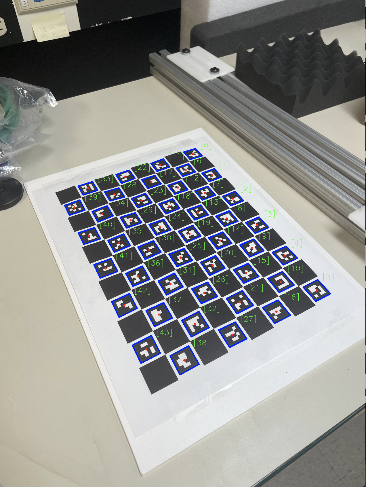

At the UW Applied Physics Laboratory, I've been working on a project to design and program an underwater camera capture system to track remote-operated vehicles. I've worked on every facet of the project, from modeling physical parts in SolidWorks to writing over 2000 lines of code in Python, using OpenCV computer vision.
The majority of my work involved writing Python code to facilitate communication between a centralized server and the many Raspberry Pi's that served as remote clients. These scripts performed tasks such as intrinsically and extrinsically calibrating a camera using a ChArUco board, taking images simultaneously within two thousandths of a second of each other, and running calculations to trilaterate the location of an underwater ROV using structure from motion.

Gitlab

Documentation

Write-up (still in progress!)


Copyright © 2023 Marvin Lin. All Rights Reserved.
Made with love, passion, and lots of caffeine 🥳